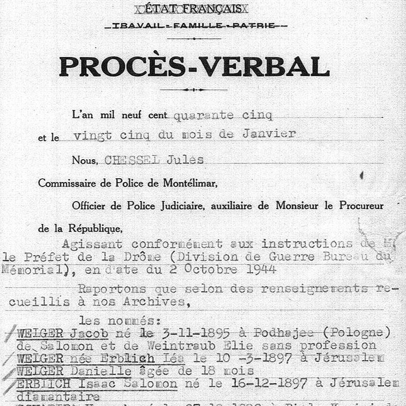

Portrait d’archive
Daniela Welger
Daniela WELGER
Daniela WELGER ou WELBERG est née le 02/12/1940 à Toulouse en France.
Rassemblée à Lyon, elle est déportée à Auschwitz le 27/03/1944 par le convoi n°70. Elle est morte en déportation.
Déportée avec son père Jacob (03/11/1895, Padajec) et sa mère Léa (10/03/1899, Jérusalem)
Dernière adresse connue : 137, Grande-Rue 26200 (Montélimar)
Nom : WELGER ou WELBERG
Prénom(s) : Daniela Danièle
Date naissance : 02/12/1940
Âge (ans) : 3
Lieu naissance : Toulouse
Pays ou département : Haute-Garonne
Lieu rassemblement : Lyon
Dernière adresse : 137, Grande-Rue
Ville : Montélimar
Code postal : 26200
N° Convoi : 70
Date déportation : 27/03/1944
Informations diverses : Le 2 mars 1944, Jacob Welger, 51 ans (né le 03/11/1895 à Padajec, Ukraine), son épouse Léa née Erblich, 45 ans (née le 10/03/1899 à Jérusalem) et leur fille de 3 ans et demi, Daniéla, née à Toulouse, qui résidaient au 137 Grande Rue, à Montélimar sont arrêtés par les Allemands (Source: Musée de la Résistance en ligne et Mémorial de l’oppression et de la délégation régionale du Service de recherche des crimes de guerre ennemis) et rassemblé à Lyon. Sont arrêtés également Isaac Erblich et Hersch Schapira. Daniéla est déportée avec son père Jacob Welger (03/11/1895, Padajec, Ukraine) et sa mère Léa née Erblich (10/03/1899, Jérusalem).
Welger (Daniela), née le 2 décembre 1940 à Toulouse (Haute-Garonne), décédée le 1er avril 1944 à Auschwitz (Pologne). JO
Lieu de déportation : Auschwitz
Lieu de départ : Drancy
Nombre total de déporté·e·s du convoi : 1000
Gazé·e·s à l'arrivée : 480 (48 %)
Survivant·e·s en 1945 : 152 (15,2 %)